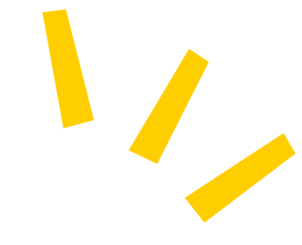
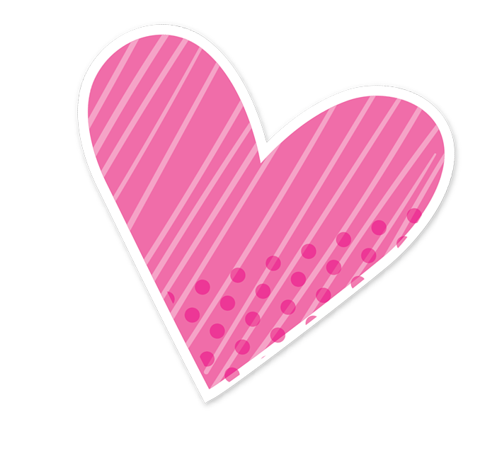
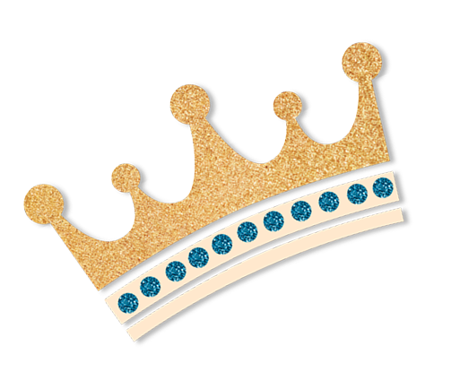
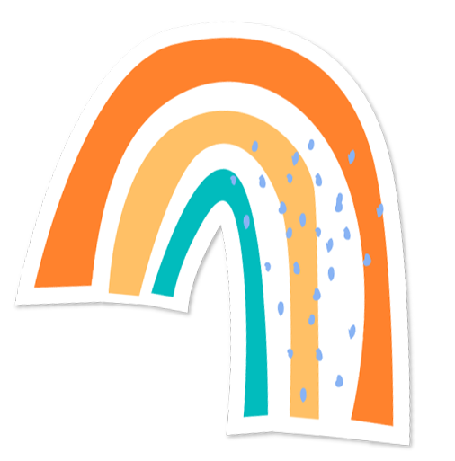
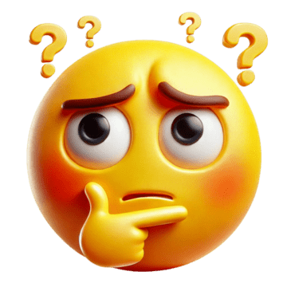
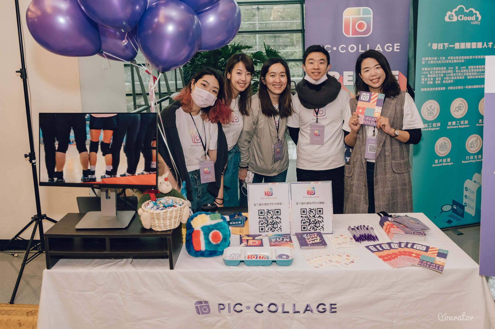
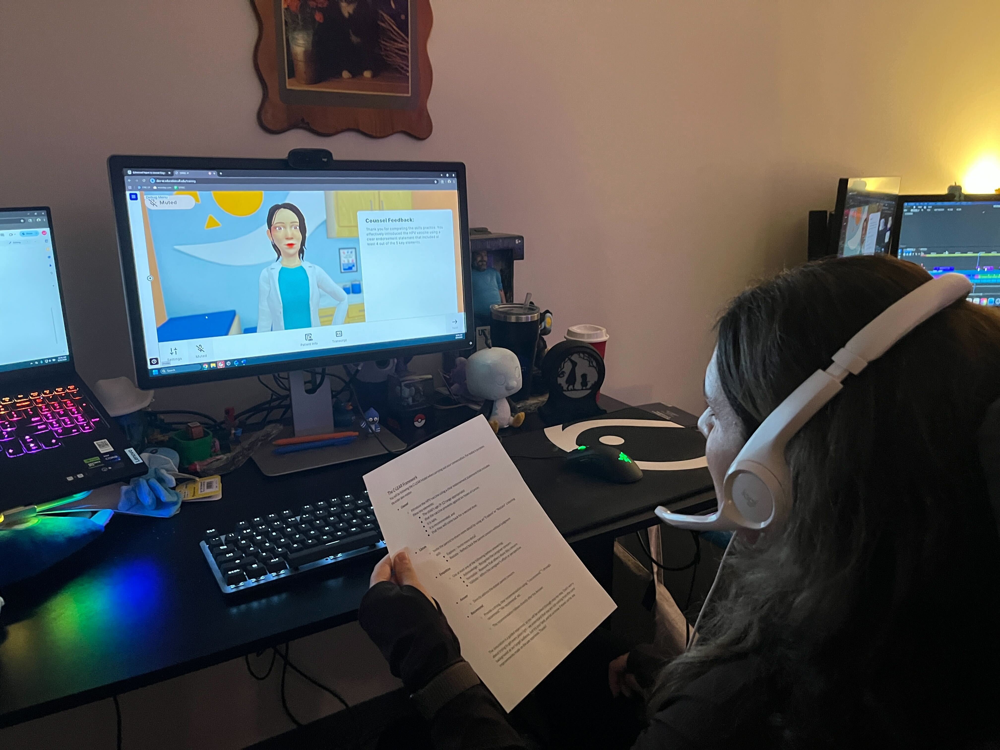
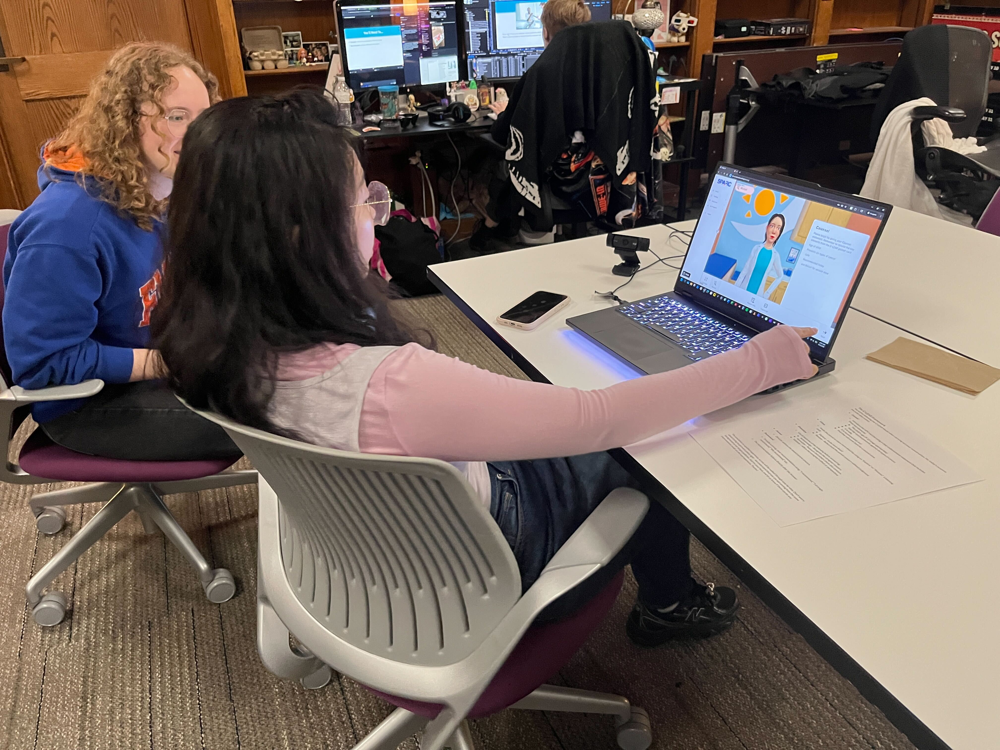
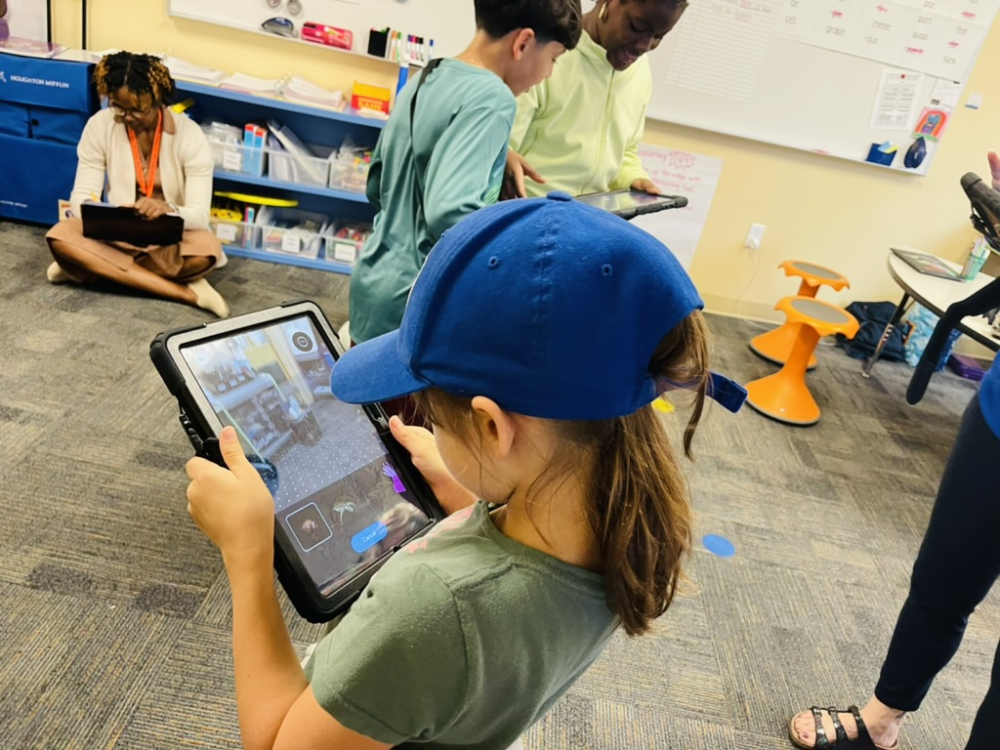
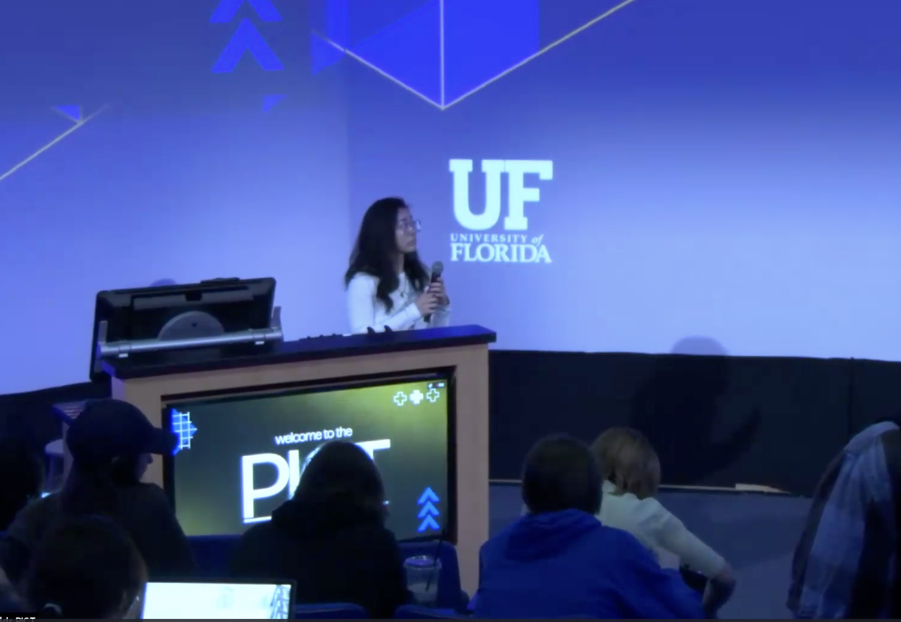

Hi, I'm Eve.
Nice meeting you today!




I graduated from law school…
And immediately felt lost. Law school sharpened my analytical thinking, but it wasn't where my creative energy wanted to go. That tension pushed me to look somewhere new.

An internship that changed everything.
At PicCollage, I was surrounded by incredibly talented people who moved fast and cared deeply about what they built. Watching them work made one thing clear: I wanted to pursue design. So I decided to apply for a masters program for UI/UX Design.

PicCollage · Taipei
MA Program at the Academy of Art University
I learned so much during my time at the Academy of Art University. I met mentors that shaped my perspective on design and innovation. I also got to showcase my work at the 2023 Spring Show.😆 During semesters, I also worked with starup companies to build apps and SAAS products.

Spring Show · San Francisco
As a UI/UX Designer at the University of Florida.
My work at the University of Florida spans visual design, product design, and emerging technology. I've designed content management systems, dashboards, and WordPress plugins. Our team operates like an agency, we collaborate with researchers and faculty to build platforms that support their work. This is really where design meets research and emerging tech!

Agentic AI User Testing
Agentic AI User Testing
AR App TestingCrochet, nails, vibe coding & cats.
When I'm not designing, you'll find me crocheting, doing my own gel nails, building silly side projects with AI, and spending time with my cats.
I also teach a course at the Digital Worlds Institute.
It is extremely rewarding and a challenging experience to work with college kids! (Also humbles you with Gen Z stares)


Ready for my next adventure.
I’ve really appreciated that my current role is fast-paced and lets me work across different teams and projects. It’s given me a lot of breadth. But over time, I’ve realized I want to go deeper on one product—really follow its evolution, iterate thoughtfully, and see the longer-term impact of the work
← scroll or swipe to revisit